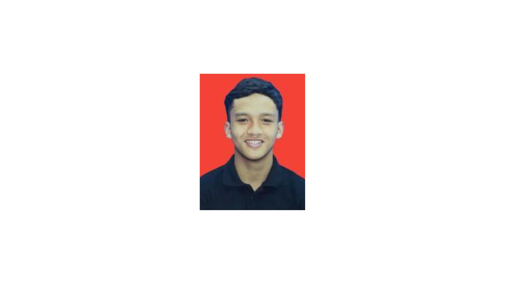
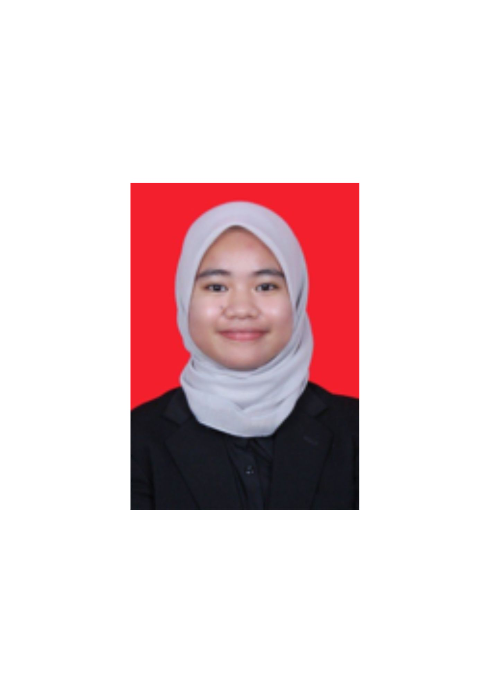
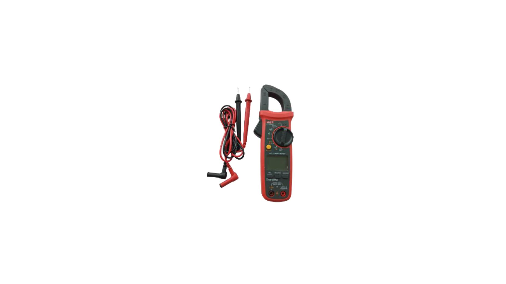
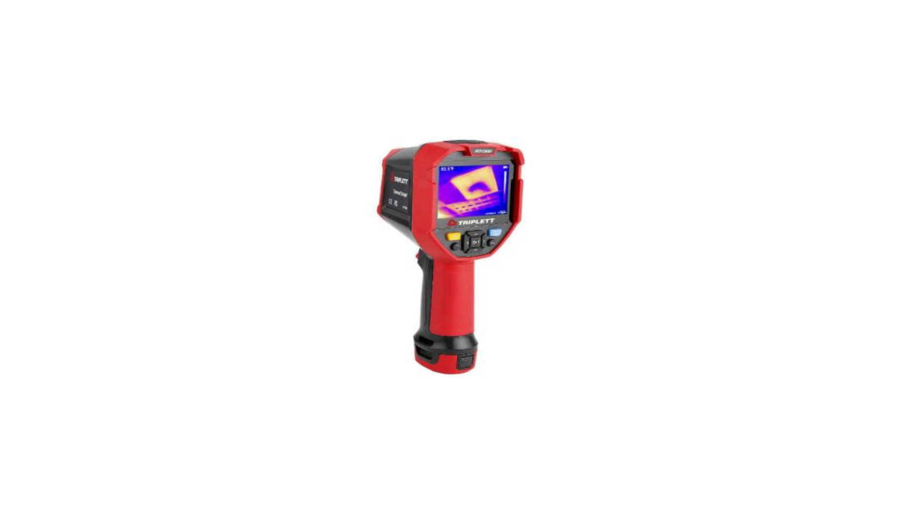
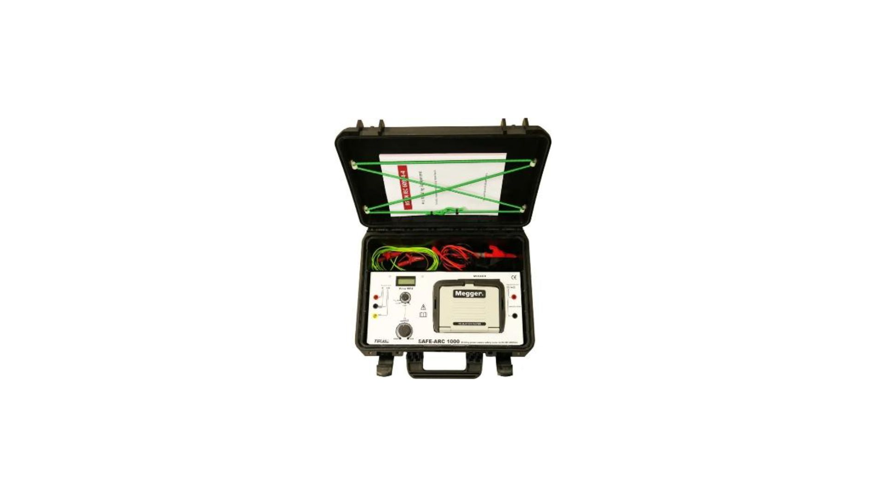
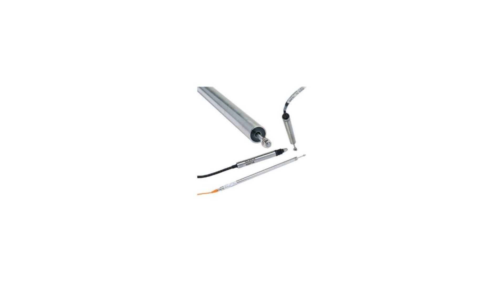

Project Overview
Sistem Pemantauan Kualiti Masa-Nyata Gas Metal Arc Welding (GMAW) ini direka khas untuk menganalisis parameter kritikal semasa proses kimpalan sedang berjalan. Dengan menyepadukan penderia perkakasan elektrik, terma, beban, dan sesaran, sistem ini membolehkan pengesanan ralat awal bagi menjamin kualiti sambungan logam yang optimum.
Melalui papan pemuka interaktif ini, data daripada proses kimpalan dikumpul, divisualisasikan, dan dipantau bagi memastikan pematuhan spesifikasi teknikal kimpalan industri standard.
Project Team Members

Danial Hakim
Team Leader & GitHub Manager
Muhammad Ainul
Hardware Configuration Specialist

Muhammad Arshiq
Data Analyst & Report Writer

Batrisyia Qistina
Quality Control & Tester
Measurement Equipment Used

1. Clamp Meter
Function: Measures electrical current without disconnecting the circuit.

2. Thermal Imaging Camera
Function: Non-contact temperature measurement of weld bead.

3. Arc Welding Analyzer
Function: Measures welding voltage and current transient signals.

4. LVDT Sensor
Function: Linear Variable Differential Transformer to measure material displacement.
❶ Electrical Parameters Monitoring
Real-Time Data Logs
| Time (s) | Current (A) | Voltage (V) |
|---|---|---|
| 1.0 | 180.2 | 24.1 |
| 2.0 | 181.5 | 24.3 |
| 3.0 | 179.8 | 23.9 |
| 4.0 | 185.0 | 24.5 |
| 5.0 | 182.1 | 24.2 |
❷ Weld Bead Thermal Control Chart (X-Bar)
Thermal Limits Assessment
| Parameter | Value (°C) | Status |
|---|---|---|
| Upper Control Limit (UCL) | 1650 | Limit |
| Process Average (Mean) | 1520 | Optimal |
| Lower Control Limit (LCL) | 1400 | Limit |
❸ Load Stability & Distortion Tracking
Mechanical Data Summary
| Sample No. | Force Load (kN) | Displacement (mm) |
|---|---|---|
| Sample 1 | 12.4 | 0.12 |
| Sample 2 | 12.6 | 0.15 |
| Sample 3 | 11.9 | 0.11 |
| Sample 4 | 12.8 | 0.18 |
| Sample 5 | 12.5 | 0.14 |
Project Conclusion
Melalui pembangunan sistem ini, pemantauan parameter masa-nyata bagi proses GMAW berjaya dilaksanakan. Integrasi graf analisa membolehkan kawalan kualiti litar elektrik, kestabilan haba, serta meminimumkan kecacatan mekanikal seperti herotan fizikal pada spesimen kimpalan.
Sistem ini terbukti berkesan bagi meningkatkan kecekapan kualiti kawalan dalam subjek BMIK 2124 (Electrical Welding Equipment).
References & Standards
1. AWS D1.1/D1.1M:2020 - Structural Welding Code - Steel.
2. Cary, H. B., & Helzer, S. C. (2005). Modern Welding Technology. Pearson/Prentice Hall.
3. O'Brien, A. B. (2004). Welding Handbook: Welding Processes, Part 1. American Welding Society.